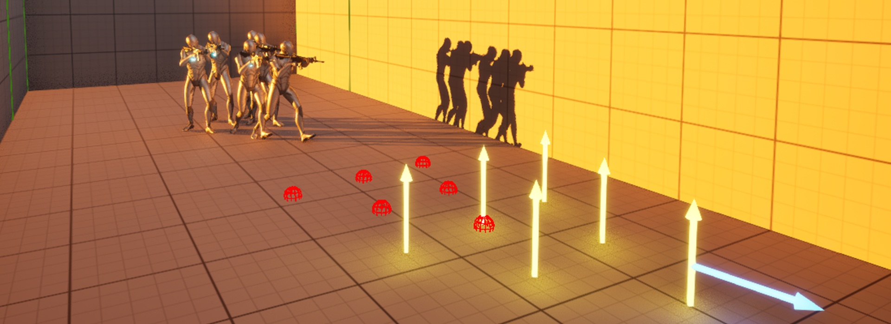
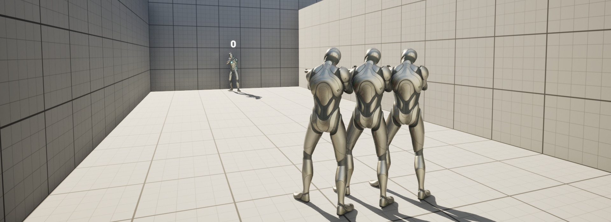
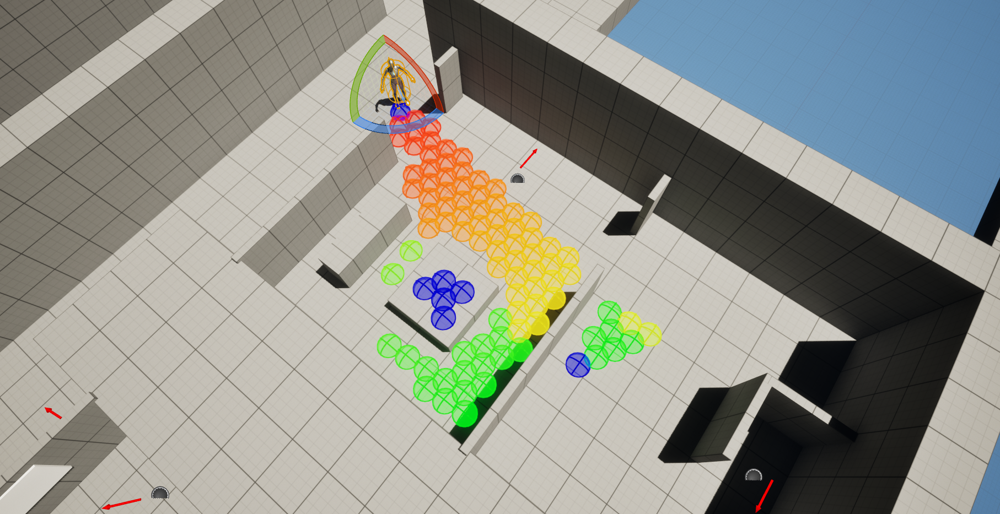
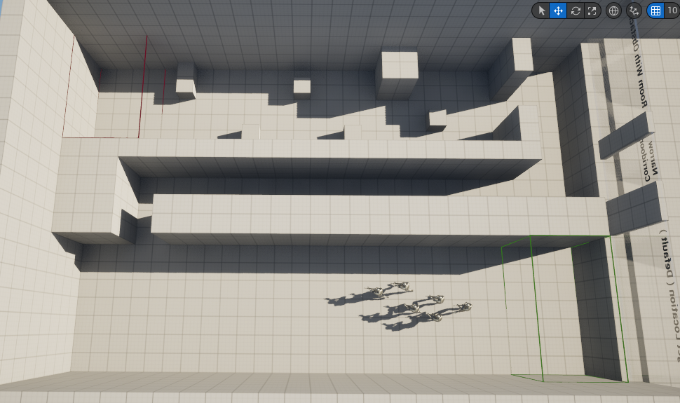
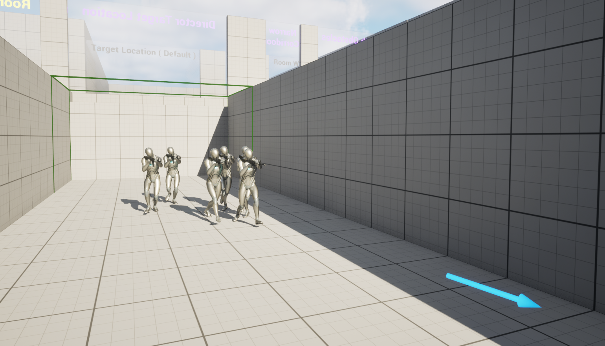
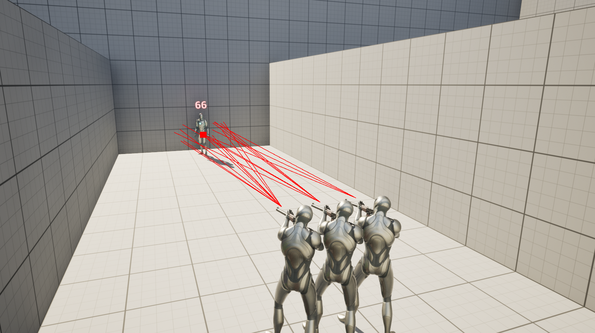
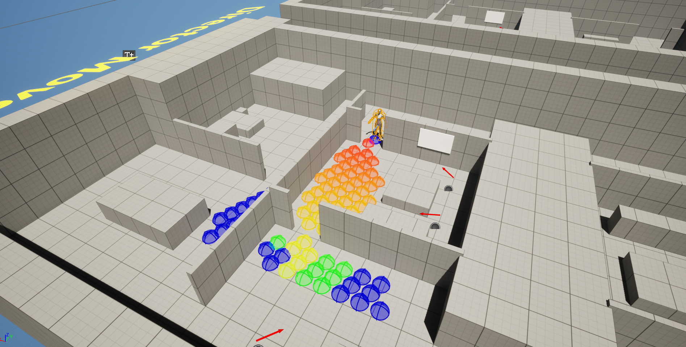

AI Director Analysis of Multi-agent Guiding
A Dissertation on Director Systems
My Dissertation for my Final Year Project at The University of Staffordshire was on "AI Director System for Multi Agent Guiding". This Dissertation acts as an overview of a variety of AI technologies and assesses how they could potentially be implemented alongside an AI Director system. The overall result of the implemented artefact did not prove or disprove a benefit/loss for a director system to be used to manage a group of AI. Despite the resulting artefact being unsuccessful, I have learned a wide variety of AI technologies and improved my Unreal Engine C++ skills to incorporate EQS systems and practiced the Type Object pattern as well as my blueprint skills.
Team Size
- Solo
My Role
- Researcher
- Programmer
Duration
- 16 Weeks
Tech Stack
- Unreal Engine
- C++ & Blueprint
Grade / Outcome
- 82% — First Class
Context
- Final Year Dissertation
Screenshots



Dissertation
Dissertation Link
Download
Gallery




Technical Breakdown
Environment Query Systems
For a section of my dissertation I discovered Environmental Query Systems for Unreal which allows for an agent in the world to search a range of points in the Environment and filter/score results based on test conditions. In Unreal Engine, these tests are simple to use and have a wide variety that are default in engine.
- Navigable — Whether the agent can reach the point
- Distance — How far the point is from the agent
- Visibility — Can the agent see the point
- Actor Type — Does it match a specific actor class
- Overlapping — If the point in world is overlapping any actor
In the edge case I wanted to do, there was no directional querying, so I created a query generator which plotted data in a direction using a custom pyramid pattern.

Weapon Token System
In the research conducted I found a token system designed for group firing by Sergio Ocio Barriales. He proposed that AI difficulty can be tweaked by altering the damage output of AI. I saw this and created an artefact that would use a token system for accuracy, similar to how the Ellie AI was created in TLOU. The system would measure how many targets were perceiving the player and vice versa to scale the number of successful shots that the AI can take, this would then be evaluated against a curve to determine a final token fire count value. Overall token systems for accuracy proved to work to a small degree, but to research further I would need to test with different values changing such as damage.
AI Formations
For the penultimate section of my artefact, a formation/cohesive movement was tested to determine whether the use of an AI Director could be used to create a cohesive movement. Whilst the results of the formation and director follow were somewhat buggy, a director follow method was more consistent in results than a standalone system. In the Final section I combined all three artefact research areas to receive a clear definition into whether it was a success. This was personally a failure due to the inability for the artefact to perform consistently, but overall the result came out as a 'maybe'. In the future a better implementation could be made to test these results better.
Code
EnvQueryGenerator_Pyramid.cpp
Project Links